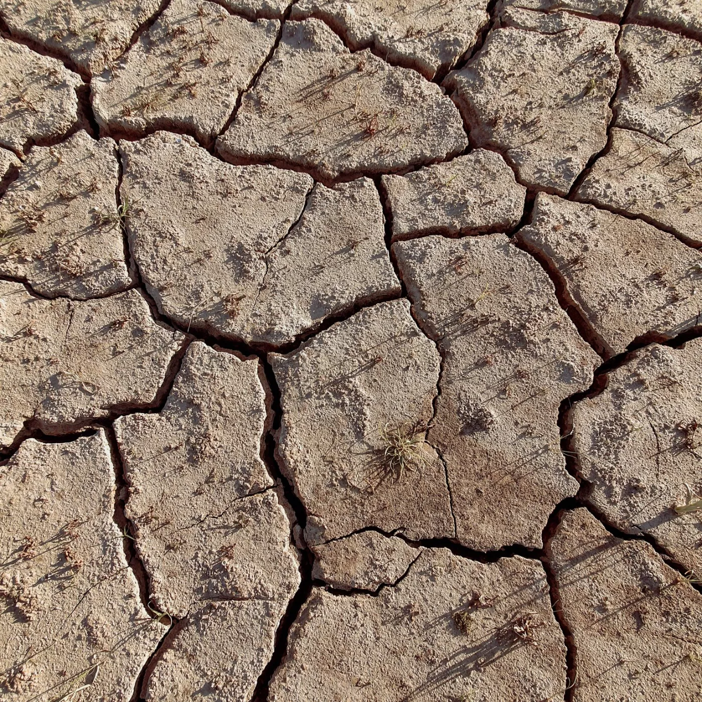
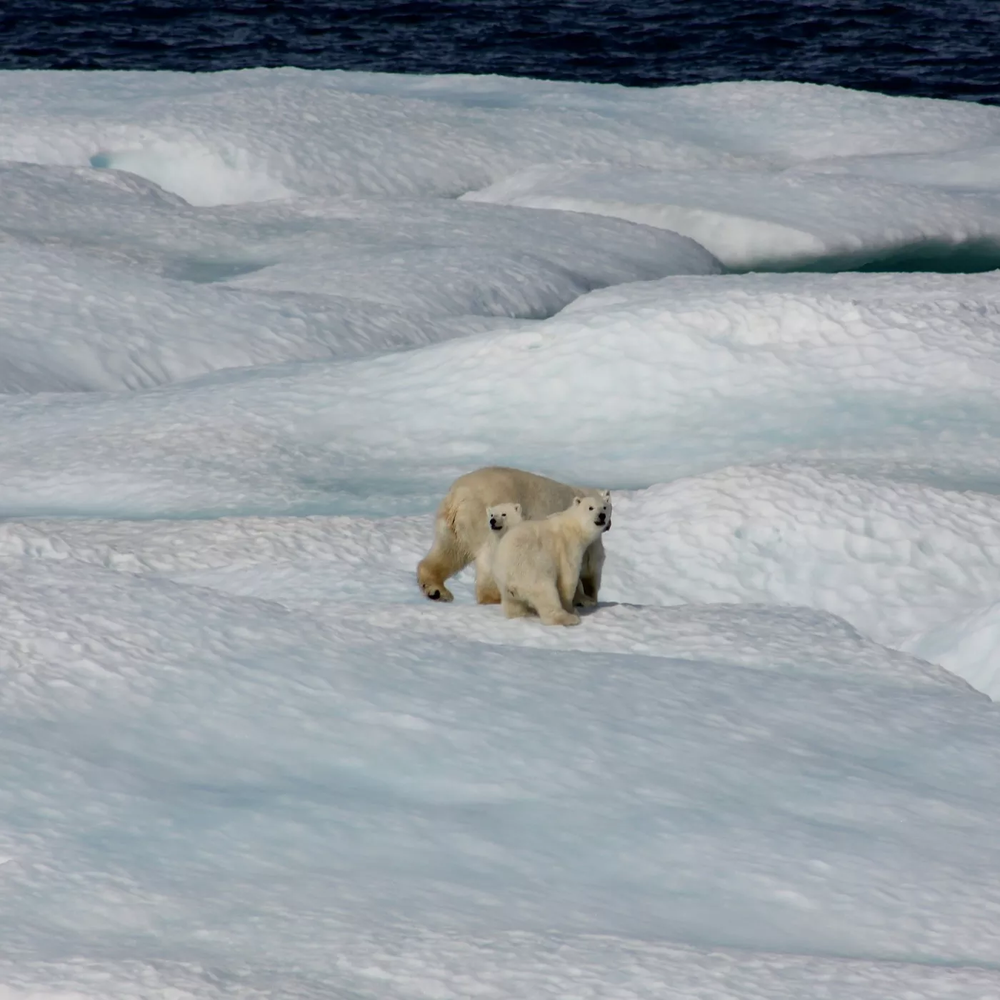

Definition:

Global warming is a phenomenon of climate change characterized by a general increase in average temperatures of the Earth, which modifies the weather balances and ecosystems for a long time. It is directly linked to the increase of greenhouse gases in our atmosphere, worsening the greenhouse effect. .
.
Understanding Global Warming
In fact, the average temperature of the planet has increased by 0.8º Celsius (33.4° Fahrenheit) compared to the end of the 19th century. Each of the last three decades has been warmer than all previous decades since the beginning of the statistical surveys in 1850. At the pace of current CO2 emissions, scientists expect an increase of between 1.5° and 5.3°C (34.7° to 41.5°F) in average temperature by 2100. If no action is taken, it would have harmful consequences to humanity and the biosphere..
How long does carbon dioxide remain in our atmosphere?